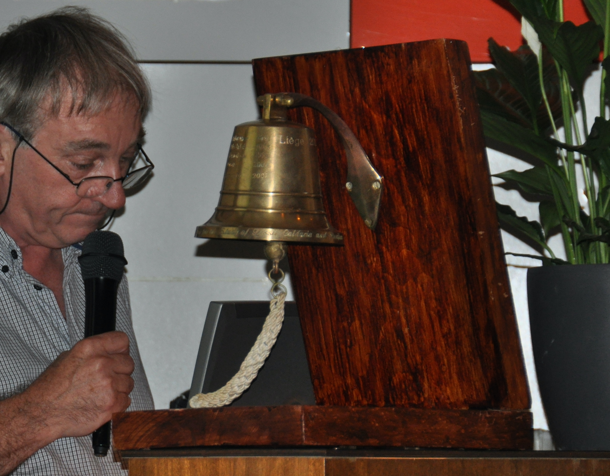

The roots of the society reach into the late 1960s. At that time, the country with the largest number of researchers in the field of fossil coelenterates was the Soviet Union. It might be unbelievable today, but the Second All Union Symposium on Fossil Corals of the USSR organized 1967 in Tallinn (now Estonia) was attended by 127 researchers, and only two of them were from a foreign country. During this meeting the decision was made to open the next meeting in 1971 to the international public.
Hence, the First International Paleontological Symposium on the Study of Fossil Corals was organized on August 18th to 25th, 1971 in Novosibirsk, Russia. Thanks to the talents and networking of the Academician Boris Sergeevich Sokolov, and despite the political differences between the East and West, many coral researchers from Western countries could attend the meeting in Novosibirsk. According to several sources, most or all Western attendees met in a hall of Moscow Airport. From there they all took the same flight to Novosibirsk. We do not want to imagine the future of coral research and our society if anything had gone wrong on that flight.
The meeting in Novosibirsk was very successful and set the pace for the future international collaboration in fossil coral research. The society was still not formally set up, but things were set in motion, when the International Committee on Fossil Corals was created. If you look at the composition of the committee, it reads like the who is who of coral research. We find among the founding fathers and mothers D. Hill, J.-P. Chevalier, M. Minato, W. Oliver and B.S. Sokolov in the rank of president and vice-presidents.
In Novosibirsk started also a very important tradition for the society’s symposia: the society bell (see photo). The bell will ring twice during a symposium; at the opening ceremony to mark the start and during the closing ceremony to mark the end of the symposium. The name and year of the symposium is engraved on the bell, and it is one important task of the last symposium organizer to ship the bell to the next symposiums location.

The society bell at the Liège symposium in 2011. In the back Eddy Poty, a future Milne Edwards Medalist (2015).
A very difficult task in Novosibirsk was to find a volunteer to organize the next international symposium in 1975. It was finally J.-P. Chevalier who accepted the task to organize it in Paris. This choice seemed to be somewhat natural, since the “Paris School of Coral Research” was at that time the second largest national group of coral researchers. Some present at the banquet, where J.-P. Chevalier accepted the task, will also talk about a very festive atmosphere, so typical for meetings of the fossil coral researchers, which helped to reduce the concerns of the future symposium organizer.
In Novosibirsk, it was also agreed to regularly publish (at least one volume per year) a Newsletter entitled Fossil Cnidaria to foster the information exchange between the different national communities. Again, it was J.-P. Chevalier, who took over the task and became the first editor of the newsletter.
It is not always easy to trace the history of the society, and this does not concern only the early days. A lot of the society business, including the distribution of the newsletter and collecting membership fees (corresponding to the costs for printing and sending the newsletter), was done in a private and sometimes unorthodox way. It was often done to avoid spending money (which the association never had). There are several rumors that some of the institutions who significantly contributed to the success of the society, were actually never aware of doing it. The strong personal links and engagements of society members also helped to fly under the radar during the politically difficult times and to continue the exchange between the scientific communities of the different countries and political systems.
The Second International Symposium on Fossil Corals and Coral Reefs was held in September 1975 in Paris. Apart from the scientific success, the Paris meeting is important for the decision to make things more formal. Hence, J.-P. Chevalier took the initiative for writing a constitution, which was adopted and published in Fossil Cnidaria in 1976. Thus, the International Association for the Study of Fossil Cnidaria was established. It was also decided that the Chair of the last symposium becomes the president of the association/society for the next 4 years. Hence, again we see J.-P. Chevalier at the forefront of the society business and responsibilities.
You would say that in Paris everything was fine, but this meeting also reminded us that politics can become dominant, and colleagues from several countries were not allowed to attend the symposium. If you talk to different colleagues present in Paris, one may wonder if the conference banquet was organized in a splendid Castle outside of Paris or just a fine restaurant in the city center of Paris. But independent from the location, you will hear stories about splendid food and good French vines. Important for the society was also a change in the editorial team of the newsletter, which was for the next 4 years edited by Bill Oliver (Washington) and Jim Sorauf (Binghamton). They established a very effective system in putting to work the entire coral community. The workload was shared by numerous national correspondences collecting all kinds of news and information in their countries, and colleagues who collected the bibliographic information for specific taxonomic groups or topics (called bibliographers).
If you look on the titles of the following symposia, you will see that it was always about more than fossil corals, and names as Fossil Cnidarians (Warsaw, 1979) or Fossil Cnidaria and Archaeocyathids and Stromatoporiods (Washington, 1983) have been used. The organization of the Warsaw symposium was successfully headed by Ewa Roniewicz and the choice of Warsaw clearly shows the principal idea behind the society – enable scientific exchanges beyond political boundaries and try to bring people together. Hence in those times, the alternation between symposia in eastern and western countries was the best compromise to ensure that members of different national communities could meet, and it helped to circulate news, reprints and fossil material also to those unable to participate. After the Warsaw symposium Jerzy Fedorowski became president, and John Jell (Brisbane) took over the responsibility of newsletter editor for the following four years. The Washington symposium, organized by the coral group of the Smithsonian Museums headed by Bill Oliver, is so far the only symposium organized on the North American continent. After this symposium Klemens Oekentorp (Münster) became the editor of the newsletter.
The fifth symposium was organized not in 1987, but in 1988 for the first and only time in the southern hemisphere in Brisbane (Australia). The date was very convenient since it not only corresponded to the bi-centennial anniversary for Australia, but also offered the possibility to attend the IASFCP symposium and the ICRS congress. It was at this symposium that the name of the society was changed to International Association for Study of fossil Cnidaria and Porifera.
Due to changes in the British university system in the late 1980’s, the initial plan to organize the 1991 symposium in Newcastle-upon-Thyme as proposed by Colin Scrutton had to be cancelled. However, a German team led by Klemens Oekentorp stepped in. This can be seen as a lucky coincidence in the then changing political landscape. The 1991 symposium in Münster became not only the largest one (>350 participants), but also one where many colleagues met for the first time after travel restrictions did not (almost) exist anymore.
The 7th symposium in 1995 was organized by Sergio Rodriguez in Madrid. You will hear stories about a colleague giving a talk in almost every session, or discussions with the police about throwing small stones when being bored during a fieldtrip. After this symposium the editorship of the newsletter changed after 12 years from Klemens Oekentrop to Bernard Hubmann (Graz). The 8th symposium in 1999 was organized for the first and only time in Asia by Kenji Mori in Sendai. Important for the society was the decision to use as official medium for communication the society’s website and not the printed newsletter anymore. However, the printed newsletter was maintained and Klemens Oekentrop returned as its editor with the support of Stefan Schröder (Köln). The 9th symposium was organized in Graz by Bernard Hubmann. It took place in the middle of the 2003 European heat wave, which in many places recorded the then hottest summer for the last 450 years. However, this did not slow down the participants and many even heated scientific discussions took place. After this symposium, the editorship of the newsletter and the management of the website went to Xiangdong Wang (Nanjing) and Tomas Wrozolek (Katowice).
For the 10th symposium in 2007 the symposium returned to the country where the first symposium took place. This time, the organization in Saint Petersburg (Russia) was in the capable hands of Olga Kossovaya. B.S. Sokolov, well in his 90’s at this time, but still interested and active in coral research, send greetings from his Moscow home. After this symposium Tomas Wrozolek was in charge of the website and the newsletter.
A team around Eddy Poty organized the 11th symposium in Liège in 2011. Participants will remember the charm of the meeting location in the old buildings of the Medicine Faculty. Since this symposium, the society awards at the closing ceremony of each symposium the Milne Edwards Medal. It rewards a scientist for his/her significant contributions to the understanding of fossil corals, sponges and reefs by means of a substantial body of research. The first medalists were Francoise Debrenne (Paris) and John Jell (Brisbane).
The 12th symposium was organized in 2015 in Oman (Muscat) by Michaela Bernecker. It was the smallest symposium in number of attendees, but the participants were able to see the fascinating geology and palaeontology of the SE Arabic Peninsula. At Muscat, Eddy Poty (Liège) was recipient of the Milne Edwards Medal. Discussions how to modernize the association had already started in Liège, and were continuing after the Muscat symposium. First steps were made, but were interrupted in 2017 by the sudden death of the society’s president Michaela Bernecker. The interim was assured by Francesca Bosellini who had agreed to organize the 13th symposium.
In 2019 the symposium returned to Europe and was organized in Modena. Here, the members revised the constitution of the society. Among important organizational changes, the most remarkable change is that the name was changed to International Fossil Coral and Reef Society. The Milne Edwards Medal was awarded to Ann Budd (Iowa City).
A lot of housekeeping has been done in the last years, and we are delighted that with the contribution of many people, new initiatives have been brought to light. Since the future of our science and the society relies on young people, they start to play a more and more active and prominent role, not only in the society’s life, but also in the council.
Over the many years, the symposia have all demonstrated the diversity and dynamics of research related to fossil corals, sponges and reefs in the broadest sense. Even if shrinking, our scientific community remains as lively, diverse and friendly as it has been from the beginning. If you speak to society members, almost all will tell you about strong scientific links and collaborations, which started with their first participation at one of the symposia. But most important for them will be to tell you about the great friendships, which resulted from the meetings. If some members would have been more turned into making money, they could have run a successful business for renting out holiday accommodations or rental cars for holidays and field work.
The success of the society has always been thanks to its members and many people have served in official positions. They are thanked for their time and energy devoted to the society business, but more important are all the almost invisible and unknown people behind the scene who helped IASFCP and IFCRS over the last decades.
Acknowledgements
It would have been impossible to write this text without the many information, memories, stories and documents shared by different members with me over the last 2 decades – may it be after a more formal request, or stories told with a glass of beer or wine in the speakers’ hand. It would not be fair to try to provide names of all the sources here, since this list would undoubtedly be more incomplete than complete. I just want to thank everybody who in one way or another contributed to this text.